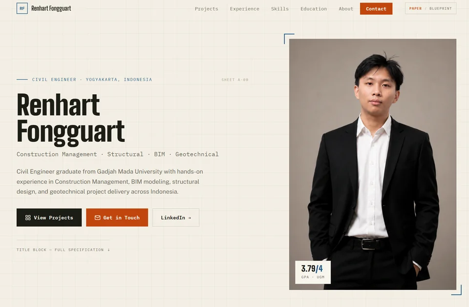
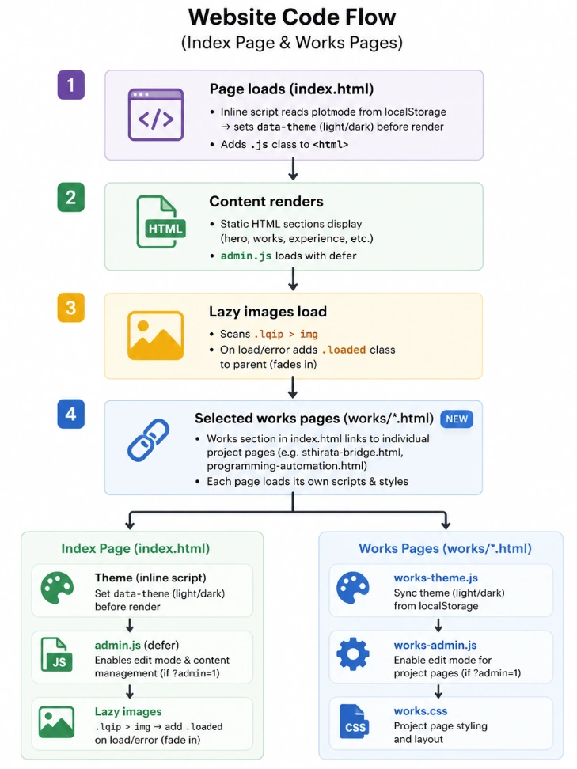
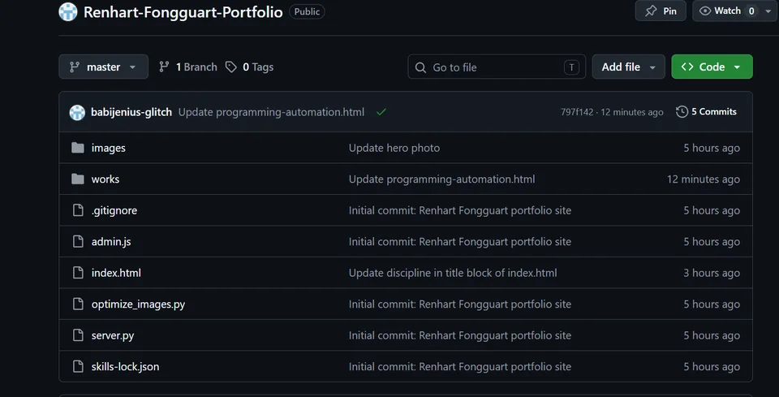

WEB DESIGN & DEVELOPMENT · 2026
This Portfolio
Website
The very site you're viewing — a fast, responsive, dependency-free static portfolio designed, engineered, and deployed end-to-end.

Overview
This is the very site you're looking at. It was designed and built from scratch as a static website — no frameworks, no build bloat — with a focus on speed on slow connections, a distinctive engineering-drawing aesthetic, and a self-editable content system.
The result is a tiered project showcase with a custom responsive-image pipeline, a PAPER / BLUEPRINT theme toggle alongside light & dark modes, and an inline editor that lets the content be updated straight from the browser — all deployed and hosted on GitHub.
Scope of Work
- Designed the full visual identity and layout — typographic system, tiered project showcase, and a PAPER / BLUEPRINT plus light & dark theming
- Built the front end with semantic HTML5, vanilla CSS (custom properties, responsive grid), and dependency-free JavaScript for scroll reveals, category filtering, and theme toggles
- Engineered a Python image-optimization pipeline (Pillow) that emits a responsive WebP ladder with blur-up LQIP placeholders, so pages stay fast even on slow connections
- Created a reusable work-detail page template and an inline browser-based content editor backed by a lightweight Python dev server
- Deployed and hosts the site on GitHub
Key Deliverables
- Responsive static portfolio site (desktop & mobile)
- Custom responsive-image build pipeline (WebP + blur-up LQIP)
- Reusable work-detail page template with PAPER / BLUEPRINT and light / dark theming
- Inline browser-based content editor
- GitHub deployment
Under the Hood

Architecture & Code Flow

GitHub Deployment